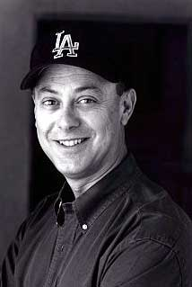
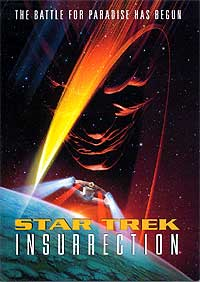
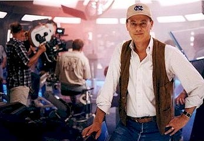

|

| Michael Piller:
a modernidade de Jornada
 |

|
Trek
Brasilis - Como voc se envolveu com Jornada nas
Estrelas, durante o incio da terceira temporada de A
Nova Gerao? Michael Piller - Eu conheci Rick Berman em um almoo com Gene Roddenberry e Maurice Hurley, o roteirista principal da Nova Gerao durante as duas primeiras temporadas. Hurley estava saindo da srie e pensou que eu seria um bom candidato para substitu-lo. Eu no fui contratado naquele almoo (Rick e Gene j haviam contratado outro amigo meu, Michael Wagner), mas eu concordei em escrever um roteiro para a prxima temporada. Meu agente ficou furioso. Escrever um roteiro free-lance ia parecer que eu no tinha conseguido um emprego na equipe. Nenhuma srie iria me contratar como roteirista da equipe novamente, ele disse. Mas eu realmente queria escrever um roteiro de Jornada, por isso ignorei o conselho de meu agente. Hoje, em sua aconchegante casa nova, ele est feliz por eu ter feito isso. Quando eu estava escrevendo aquele primeiro episdio, Wagner e Roddenberry no estavam se dando bem, e na poca que entreguei meu roteiro, Michael decidiu deixar a srie. Eu recebi uma ligao de Rick Berman. "Ns amamos seu roteiro", ele disse. "Voc obviamente conhece a srie. Gostaria de assumir a equipe de roteiristas?" At hoje, eu no acho que haja alguma coisa particularmente especial naquele roteiro, exceto por uma cena que abriu as portas do universo de Jornada para mim. Na histria (co-escrita por Wagner), um cientista construiu sua vida inteira em torno de um evento estelar que ocorre uma vez a cada 200 anos. E, agora, por misteriosos problemas com a nave, parece que ele vai perd-lo. Ele expressa sua amarga frustrao ao mais jovem membro de nossa tripulao, o garoto de 16 anos Wesley Crusher, usando pela primeira vez em minha carreira em Jornada (mas no a ltima) uma metfora de beisebol. Aqui vai o dilogo que me ganhou o emprego: STUBBS - Eu poderia viver com o fracasso. ...Bem, talvez no. Mas nunca ter tentado. Perder sua chance na rebatida. Voc conhece beisebol? WESLEY - Meu pai me ensinou quando eu era pequeno. STUBBS - Uma vez, sculos atrs, foi o passatempo mais amado da Amrica, Wesley. Abandonado por uma sociedade que valorizava fast food e jogos mais rpidos. Perdido por impacincia. Mas eu vi os grandes jogadores fazerem as grandes jogadas. WESLEY - Voc os recriou em um Holodeck? STUBBS - No, aqui... (sua mente) Com o conhecimento de estatsticas... runs, rebatidas e erros... vezes na rebatida... placares. Homens como ns no precisam de Holodecks, Wesley. Eu joguei temporadas na minha mente. Foi uma recompensa para mim mesmo. Pela pacincia. Sabendo que a minha vez iria chegar. Chame seu arremesso. Aponte para uma estrela. Uma grande rebatida e a multido se levanta. Uma nova era para a astrofsica. Adiada por 196 anos por causa da chuva. No final, Rick Berman compartilhava de meu amor pelo beisebol e aquela cena acertou-o bem entre os olhos. E uma parceria estava formada. TB - Voc gostava de Jornada antes de seu envolvimento com o franchise? Piller - Minha famlia e eu assistamos Nova Gerao regularmente. Era o tipo de srie que toda a famlia podia ver junta e ento comentar. E episdios como "The Measure of a Man" causaram uma grande impresso em mim. Ento, sim, eu era um f. Entretanto, eu no era um trekker, por qualquer definio, porque eu nunca realmente abracei o Jornada nas Estrelas original, embora eu estivesse familiarizado com ele. TB - O que voc acha que mudou em Jornada depois que voc passou a escrever para a srie? Piller - Eu acredito que a maior influncia que tive nos episdios foi trazer um foco mais forte para os personagens coadjuvantes, para tentar criar uma famlia mais forte. Picard e Data estavam bem desenvolvidos, os outros personagens no. Ento comecei a vasculhar as histrias para dar ao elenco reunido uma oportunidade de crescer, e acho que eles fizeram isso. TB - Por que voc quis sair da srie depois da terceira temporada? O que ou quem fez voc mudar de idia? Piller - Eu tinha um tipo bizarro de fantasia de ir para o Mxico, sentar na praia e escrever roteiros. Ento, quando eu assinei (contrato para A Nova Gerao), tinha me comprometido por apenas um ano. Pelo fim da temporada todo mundo estava to satisfeito com o progresso criativo que fizemos que Gene Roddenberry veio e se sentou comigo por alguns minutos e disse o quanto ele gostaria que eu voltasse para a prxima temporada, porque ele realmente sentia que a srie estava para decolar. E, como acabou acontecendo, ele estava absolutamente certo. Foi durante o vero da terceira temporada que o "cliffhanger", "The Best of Both Worlds", levou a um incrvel aumento de interesse e de audincia para a srie. Mas a verdade que eu no tinha idia de como "The Best of Both Worlds" ia terminar quando eu escrevi a primeira parte do "cliffhanger", porque eu no esperava estar por perto no ano seguinte para escrever a concluso. TB - Muitos o consideram como o verdadeiro "pai" da verso moderna de Jornada. Que tipo de impacto voc acredita ter tido na srie? Piller - Estou muito orgulhoso das contribuies que fiz, junto com Rick Berman, de trazer o franchise de volta para a excelncia criativa. Mas h apenas um pai de Jornada nas Estrelas e esse o sr. Roddenberry. Ele deu o exemplo e eu o segui. Eu trouxe minha prpria filosofia de narrativa. Eu encorajei roteiristas a serem ambiciosos e tentarem fazer de cada episdio um clssico que pudesse resistir ao teste do tempo. Eu no esperava que pudssemos fazer isso toda semana, mas acho que o importante era no se satisfazer em preencher uma hora com exploses espaciais e efeitos especiais. Nosso trabalho como escritores era explorar a condio humana. Eu no consigo pensar em outro franchise que permita a um escritor fazer isso de forma to confortvel e interessante como Jornada nas Estrelas. Precisamos nunca perder essa oportunidade. Eu acredito que eu trouxe esse senso de obrigao para os roteiristas da srie. TB - H muitos fs que sentem sua falta na produo atual de Jornada. Como voc se sente sobre isso? Piller - Ocasionalmente, eu tambm sinto minha falta l, mas eu acho que as pessoas que ainda esto l so pessoas que tm o direito de explorar seus prprios universos. Eu encorajo vocs a apreciarem o que eles esto tentando fazer, porque cada um deles tem fortes ambies de manter a qualidade da narrativa. Eu nem sempre concordo com as decises deles, mas eu sempre me sinto bem quando leio um roteiro que vai direto para examinar personagens e explorar dilemas morais e ticos que ressonam com nossa vida atual. TB - Como co-criador das duas mais recentes verses de Jornada, que conselho voc daria a Brannon Braga, que pela primeira vez est tendo a chance de criar uma srie para o franchise? Piller - Esse no um conselho para o Brannon, um conselho a todo mundo que est criando uma srie de televiso, que o de dar ouvidos sua prpria conscincia. Eu acredito que a obrigao do roteirista ir de encontro audincia, iluminar e explorar do mesmo jeito que a tripulao na ponte de uma nave estelar faz. H muitas outras pessoas que estaro interessadas no lado negcio de Jornada, incluindo nmeros de audincia, demografia e oportunidades subordinadas. Eu respeito essas pessoas e trabalharei com elas o melhor que puder, mas um roteirista nunca deve cruzar a linha e se tornar uma das pessoas de negcios. Se fizermos, perdemos tudo que somos. sempre preciso uma sutil, mas definitiva, tenso entre os que esto atrs de excelncia criativa e os que esto atrs de audincia. Isso sempre levar ao melhor tipo de srie, no importando se Jornada ou qualquer outra coisa. Ento, seja fiel a seus prprios instintos criativos e no se venda. Esse o meu conselho. TB - Deep Space Nine considerada por muitos como uma viso mais dark de Jornada. H at aqueles que dizem que a srie desistiu do futuro imaginado por Gene Roddenberry. O que voc acha que Gene pensaria de Deep Space Nine? Piller - Rick e eu conversamos com Gene sobre nossos planos para Deep Space Nine e ele deu seu total endosso. Nossa meta no era mudar o universo de Jornada, mas explorar um canto dele que nunca havia sido visto antes, enquanto sendo fiel a todos os princpios de Roddenberry. Ns confrontamos os valores humanistas de Roddenberry com valores espirituais e metafsicos aliengenas, que deram uma oportunidade de explorar novas idias sem mudar as idias de Gene sobre a humanidade no sculo 24. TB - Voc acredita que Deep Space Nine e Voyager foram trabalhadas adequadamente nos ltimos anos? Piller - Sim. Eu apenas no concordei quando eles se afastaram de histrias que eram sobre os personagens e temas de relevncia contempornea. TB - Como consultor de Voyager, voc recebe regularmente notas sobre os roteiros e decises de produo para a srie. Quais as questes bsicas voc acha que os episdios finais de Voyager deveriam lidar? Piller - Eu gostaria de ter visto a Voyager voltar para o universo de Jornada pela metade da ltima temporada e ento ter descoberto que as circunstncias para onde eles voltaram so mais complexas e no to acolhedoras quanto eles esperavam. Eu gostaria de ter visto uma ameaa aos membros Maquis da tripulao que haviam sido terroristas. Eu adoraria ter visto Janeway forada em um conflito entre os membros de sua tripulao que a serviram lealmente pelos ltimos sete anos e um interrogatrio oficial da Frota Estelar. Como voc pode dizer, eu amo dilemas ticos e morais. No tenho idia do que eles esto planejando, entretanto. TB - Voc v um futuro para Voyager na TV ou no cinema? Piller - Improvvel, embora eu no ficasse surpreso em ver os personagens de Voyager aparecendo em outro material de Jornada no futuro. TB - Quais foram as principais diferenas entre o primeiro roteiro que voc fez para o filme "Insurrection" e a verso concluda? Piller - Houve enormes diferenas entre a primeira verso que eu escrevi para o filme e a verso concluda, porque o primeiro roteiro, para ser franco, era um desastre absoluto. O que ele era eram dois filmes em vez de um e tnhamos histrias suficientes para preencher uma minissrie.  Rick e eu discutimos sobre perder o arco inteiro do Data. Falamos sobre perder o arco inteiro sobre a fonte da juventude. Sabamos que Patrick havia amado a fonte da juventude e no gostaria de perd-la, mas ainda achvamos que a parte do Data no filme estava funcionando melhor que a outra metade. Na verdade, no primeiro roteiro a fonte da juventude no era mais que um tpico de comdia -- comdia ruim, diga-se de passagem. Eu sabia que para o filme ter um impacto emocional a fonte da juventude precisava significar alguma coisa, particularmente para Picard.No desenrolar, optamos por usar o comportamento de Data como um gancho para a histria e ento enfatizar a defesa herica de Picard do planeta. TB - verdade que h um documentrio ou livro sobre esse filme que foi proibido pela Paramount ou coisa do tipo? Piller - Eu escrevi um livro durante a roteirizao de "Jornada nas Estrelas - Insurrection" -- com aprovao adiantada da Viacom Consumer Licensing e da Pocket Books -- que pretendia ser um livro de referncia para escritores de filmes. Minha sugesto para a editora era a de levar o leitor pelo processo inteiro de desenvolvimento de um filme, comeando com a idia e mostrando como mudanas, problemas, opinies, exigncias do estdio e consideraes financeiras afetariam o produto final. E, em essncia, para ver se o leitor tomaria as mesmas decises que Rick e eu tomamos conforme o roteiro foi evoluindo. O livro de nenhum jeito criticava algum dos envolvidos, nem fazia qualquer escndalo; apenas dava um insight em Jornada que nunca havia sido dado antes. Por razes que no descreverei aqui, a Pocket Books optou por no publicar o livro, o que foi um grande desapontamento. Deve ser esclarecido que ele no depreciava o filme, que, eu continuo a acreditar, se sustenta sozinho entre os outros filmes de Jornada. TB - Como so suas atuais relaes com a Paramount? Voc se v trabalhando para eles novamente? E em Jornada nas Estrelas? Piller - Estou trabalhando com a Paramount e a Lion's Gate Television em um piloto para uma srie baseada em "The Dead Zone", de Stephen King. Eu certamente no posso prever o futuro, por isso difcil dizer que nunca mais trabalharei em Jornada. Eu sou muito amigo de todo mundo que est l e Rick e eu nos encontramos frequentemente para almoar e em ocasies sociais, mas aps dez anos difcil voc no se tornar repetitivo. Eu acho que um cenrio improvvel. TB - Em que seu trabalho em Jornada ajudou sua carreira? Piller - Para todos os efeitos e propsitos, Jornada nas Estrelas FOI minha carreira. No o nico crdito no meu currculo -- que inclui roteiros para trs anos de "Simon & Simon", uma breve estadia em "Miami Vice" e um par de outras sries que no duraram muito --, mas todo escritor sonha com uma oportunidade de escrever algo que em ltima anlise se torna uma marca pessoal. E certamente a evoluo de A Nova Gerao e a criao de Deep Space Nine e Voyager foram um feito muito significativo na comunidade criativa e sou extraordinariamente grato por isso. TB - Voc agora criou sua prpria produtora. Voc poderia contar mais sobre ela? Onde fica? O que voc pretende produzir? Quais so seus projetos mais recentes? Piller - Meu filho, Shawn, e eu criamos a Piller2 (pronuncia-se "Piller Squared"). Tivemos vrios projetos de desenvolvimento com a rede de televiso WB e no ano passado produzimos um piloto chamado "Day One", baseado na minissrie britnica "The Last Train". Chegou to perto de ir ao ar que no posso nem comear a te contar. E foi realmente um grande desapontamento quando no aconteceu, porque eu realmente achei que poderia ser como Jornada nas Estrelas na Terra. Como eu mencionei, estamos fazendo uma adaptao de Stephen King este ano e acabamos de fechar um acordo com Anthony Michael Hall para estrelar (eu acho que ele brilhante). Estamos tambm gastando um bom pedao de tempo ajudando jovens escritores a desenvolver suas habilidades, do mesmo modo que fizemos em Jornada com gente como Ron Moore (cujo prprio piloto j foi aprovado pela WB nesta temporada), Brannon Braga, Ken Biller e Rene Echevarria (que est agora conduzindo "Dark Angel" para a Fox). Desenvolvemos um roteiro de comdia este ano com um jovem escritor de Nova York chamado David Graziano, em quem vejo um futuro promissor. Estamos sempre procurando vozes singulares, combinadas nossa experincia, para introduzi-las na comunidade criativa. TB - O que voc acha que mais fcil de vender em termos de conceito, um piloto para uma srie de fico cientfica ou um que no seja sci-fi? Piller - Isso realmente depende do cliente. O Showtime est procurando sci-fi, ento ser mais fcil vender um sci-fi para o Showtime. H certos lugares onde j tem sci-fi suficiente e eles no tm espao para mais um. Este ano essa era a situao na Fox, ento no levamos nenhum sci-fi para a Fox. Algumas redes simplesmente gravitam mais em torno de franchises tradicionais do que outras. Realmente depende do ano, do humor da comunidade e das pessoas no comando das redes. TB - Alm de Eric Stillwell, que trabalha com voc, com quem mais dos tempos de Jornada voc mantm contato regularmente? Piller - Praticamente todo mundo, porque eu vou a todas as festas que eles tm e continuo a distribuir notas para os escritores. Por isso estou no alcance da mo, embora isso possa mudar um pouco assim que Voyager terminar. Eu certamente permanecerei prximo a Rick pelo resto da minha vida e em contato com todos os escritores que trabalharam para mim naquela poca. Eu me sinto particularmente prximo a Ira Behr (que est escrevendo o novo piloto de comdia de Jason Alexander para a ABC). TB - Voc acredita que sua experincia anterior com jornalismo o ajudou a desenvolver habilidades de escritor? Piller - Eu acho que teve um impacto extraordinariamente valioso. Como um jornalista, eu pendia para o entretenimento das notcias televisivas -- encontrando o material fora do comum interessante que eu pudesse trabalhar de forma singular. Mas quando passei ao mundo do entretenimento, acho que meu material era mais srio e ambicioso do que o das pessoas que estavam simplesmente interessadas em entreter. Eu fui um peixe fora d'gua nos dois lugares e isso me serviu bem nas duas vezes. TB - conhecida sua admirao por David E. Kelly. Quais as caractersticas de Kelly que voc admira mais? Ele seria um bom roteirista de Jornada? Piller - Eu acho que seu background como advogado organiza sua mente de um jeito no dessemelhante ao da organizao da minha mente como jornalista. Certamente a incrvel produo de material dele, que consistentemente divertida e intrigante, faz cada temporada de televiso um prazer para o telespectador. TB - Quais voc acha que so as melhores sries de TV nos EUA e quais os maiores nomes de sua profisso atualmente? Piller - Minhas sries favoritas no ar atualmente so: "The West Wing", ento acho que Aaron Sorkin precisa estar na minha lista; "The Practice", ento acho que David Kelly precisa estar na minha lista; e ento tem um sorteio entre "Ally McBeal", que melhorou muito neste ano, "Boston Public", que est ficando melhor a cada semana, "Lei & Ordem", que eu acho que no to slida quanto costumava ser, mas consistentemente slida (mas em perigo de ser sobrepujada pelo monstro do spin-off). Levando tudo em conta, no estamos em uma m temporada de televiso afinal. Eu sinto falta de Larry Sanders e Seinfeld. Eu ainda acho que "Frasier" consistentemente divertido, mas a nica meia-hora que assisto. Estou ansioso para a nova temporada de "The Sopranos", mas eu achei a segunda temporada decepcionante. A primeira temporada foi o melhor que a televiso consegue chegar. Minha srie favorita que vi este ano foi uma minissrie de 1983, "Reilly: The Ace of Spies", que eu comprei e assisti e simplesmente amei. roteiro e televiso do tipo que mantm todos ns seguindo em frente. TB - Considerando toda a saga de Jornada, qual episdio o melhor, em sua opinio? Piller - muito difcil para mim escolher um episdio. Certamente "The Measure of a Man" um que fica comigo. Eu acho que "The Inner Light" um de que particularmente tenho orgulho. Eu no escrevi nenhum dos dois, mas eu acho que foram episdios televisivos memorveis. TB - Qual o toca mais? Piller - Eu provavelmente escolheria "The Offspring". TB - Qual o seu favorito? Piller - Sempre tive um ponto fraco no meu corao por "The Perfect Mate". No me pergunte por qu. Eu no chamaria de meu favorito, mas um que eu me lembro com grande apreciao quando penso em toda a minha experincia. Tambm tem "Whispers", de Deep Space Nine, em que O'Brien pensa que todo mundo est conspirando contra ele e no final ele no O'Brien, mas um clone, e o O'Brien real estava capturado. Eu achei que aquele foi um episdio de Deep Space Nine muito bom. E eu no posso deixar de fora "Duet", em que Kira interroga um criminoso de guerra Cardassiano. TB - Em sua opinio, qual o caminho que Jornada deveria tomar nos prximos anos? Piller - Na minha opinio, eu acredito que deveriam permitir a Jornada que tomasse flego e ficasse alguns anos parada antes de iniciar uma nova srie. TB - Voc conhece o Brasil? Piller - A primeira bab da minha filha era do Brasil e ela uma vez fez um pequeno papel em Deep Space Nine e aparentemente retornou para uma grande celebrao de sua apario no Brasil. A Playboy brasileira ofereceu a ela um monte de dinheiro para que ela posasse nua (ela recusou). Ento conheo muito o Brasil pelo que ela me conta. certamente um pas que eu gostaria muito de visitar um dia. TB - Voc gostaria de dizer algo aos fs brasileiros? Piller - Apenas que aprecio a ateno que todos vocs prestam qualidade do material que tentamos fazer aqui e espero que voc continuem a assistir qualquer das futuras sries que saiam da Piller2. 
|